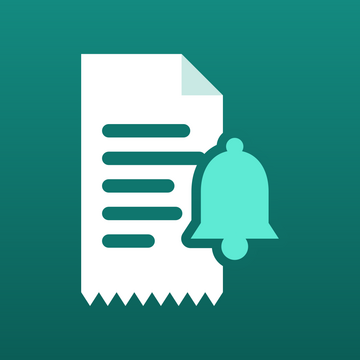

Privacy Policy
Effective November 12, 2026 · Applies to the iOS app "Receipt Ring" (Turkish name: "Garanti Takip").
Short version: we do not collect any data. Everything you add stays on your device.
What the app stores
Items, receipts, invoices, documents, notes and settings you add are stored only on your device. We have no servers and no account system, so we cannot see, access or share this information.
Camera, photos and files
The camera is used only when you choose to scan a receipt or document. If you pick a photo or a file, the app can read only the items you select. Text recognition (reading the receipt) runs entirely on your device using Apple's built-in frameworks; images are not uploaded anywhere.
Notifications
Warranty and return reminders are scheduled locally on your device. No notification data leaves your device.
Purchases
The one-time Pro purchase is processed by Apple through the App Store. We do not receive your payment details.
Analytics, ads and third parties
The app contains no analytics, no advertising and no third-party tracking or SDKs.
iCloud
If a future version offers iCloud sync and you turn it on, your data is stored in your own private iCloud account under Apple's privacy terms. We cannot access it.
Sharing and exporting
Claim files and documents leave your device only when you share them yourself (for example, by email to a service center).
Deleting your data
Delete an item in the app, or delete the app to remove all of its data from your device.
Children
The app does not knowingly collect information from anyone, including children.
Changes and contact
If this policy changes, the new version will be posted on this page with a new date. Questions: E-POSTA_ADRESI.
Gizlilik Politikası
Yürürlük: 12 Kasım 2026 · iOS uygulaması "Garanti Takip" (İngilizce adı: "Receipt Ring") için geçerlidir.
Kısaca: Hiçbir veri toplamıyoruz. Eklediğin her şey senin cihazında kalır.
Uygulamanın sakladıkları
Eklediğin ürünler, fişler, faturalar, belgeler, notlar ve ayarlar yalnızca cihazında saklanır. Sunucumuz ve hesap sistemimiz yoktur; bu bilgileri göremez, erişemez ve kimseyle paylaşamayız.
Kamera, fotoğraflar ve dosyalar
Kamera yalnızca sen fiş ya da belge taramak istediğinde kullanılır. Fotoğraf veya dosya seçtiğinde uygulama sadece seçtiğin öğeleri okuyabilir. Fişteki yazının okunması tamamen cihazında, Apple'ın yerleşik altyapısıyla yapılır; görseller hiçbir yere yüklenmez.
Bildirimler
Garanti ve iade hatırlatmaları cihazında yerel olarak planlanır. Bildirim verisi cihazından çıkmaz.
Satın alma
Tek seferlik Pro satın alımı App Store üzerinden Apple tarafından işlenir. Ödeme bilgilerin bize ulaşmaz.
Analiz, reklam ve üçüncü taraflar
Uygulamada analiz aracı, reklam, üçüncü taraf takip ya da SDK yoktur.
iCloud
İleride iCloud eşitleme eklenir ve sen açarsan verilerin Apple'ın gizlilik koşulları altında kendi özel iCloud hesabında saklanır. Biz erişemeyiz.
Paylaşma ve dışa aktarma
Başvuru dosyaları ve belgeler yalnızca sen paylaştığında (örneğin servise e-postayla gönderdiğinde) cihazından çıkar.
Verilerini silme
Uygulamada ürünü silebilir ya da uygulamayı silerek tüm verilerini cihazından kaldırabilirsin.
Çocuklar
Uygulama, çocuklar dahil hiç kimseden bilerek bilgi toplamaz.
Değişiklikler ve iletişim
Bu politika değişirse yeni hali yeni tarihle bu sayfada yayınlanır. Sorular için: E-POSTA_ADRESI.